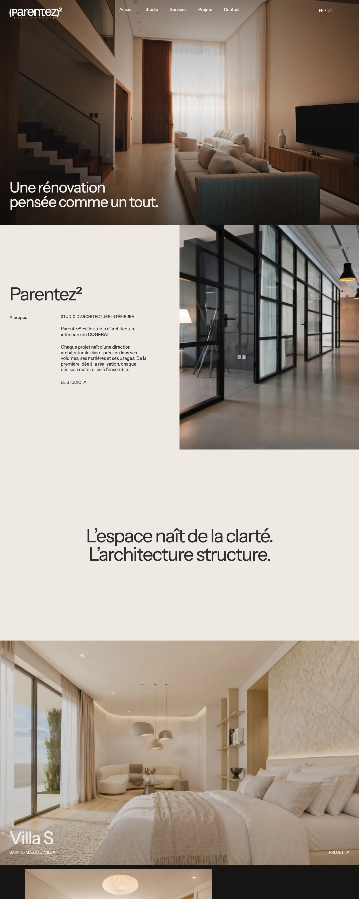
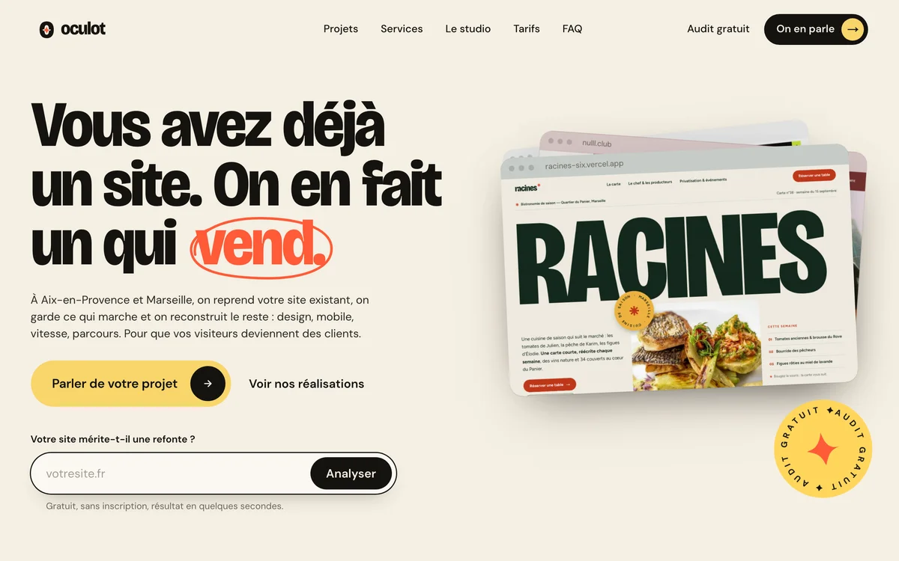
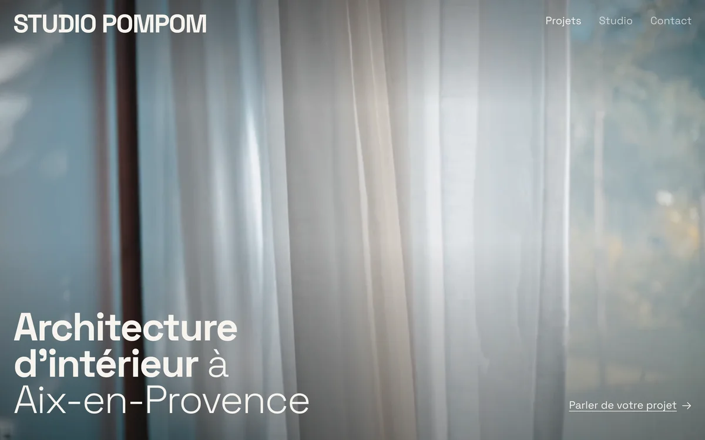
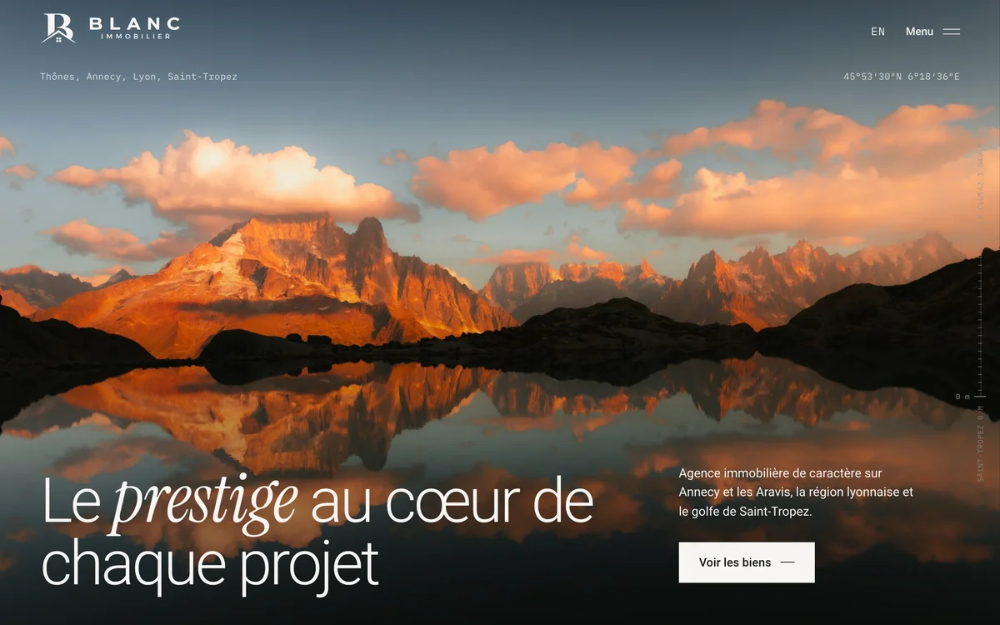

Vous avez déjà un site.
On en fait un qui vend.
Oculot Studio · Refonte de sites · Aix-en-Provence
oculot.studio ↗Audit gratuit de votre site



Refonte, création et sur-mesure : on refait les sites des entreprises pour qu'ils vendent.



Oculot Studio modernise les entreprises : site, logiciels métier et automatisations IA, sur mesure.
Des sites qui vendent, des outils qui font gagner du temps.